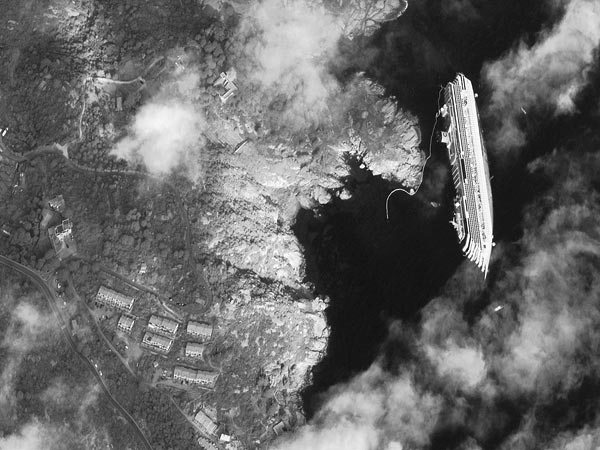

Satellite photo of Costa Concordia shipwreck David Pescovitz, boingboing.net From DigitalGlobe, this striking satellite image of the Costa Concordia shipwreck off Giglio, Italy.
Satellite photo of Costa Concordia shipwreck David Pescovitz, boingboing.net
From DigitalGlobe, this striking satellite image of the Costa Concordia shipwreck off Giglio, Italy.